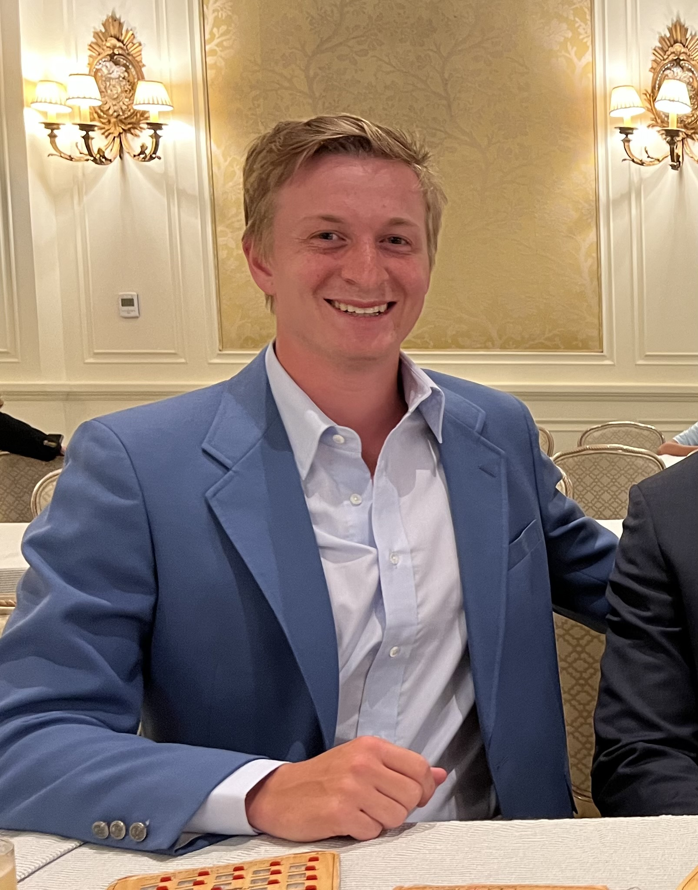
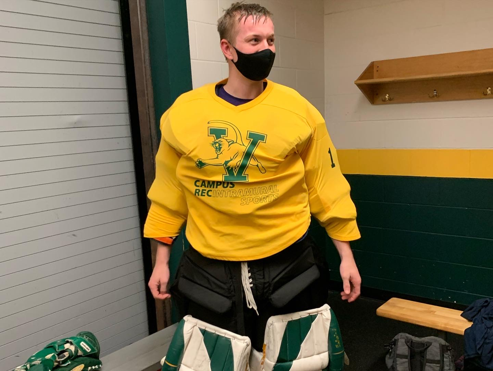

About Me!
 Hi, I’m Samuel Stites Allen, and I'm a senior studying engineering at the Univeristy of Vermont. I'm persuing a bachelors in engineering from UVM's College of Engineering and Mathematical Sciences, spliting my time primarliy between Civil and Mechinical Engineering. In my 4 years of school, I’ve worked on a number of engineering projects, both individually and in a team setting. These projects include but are not limited to structural analyses and finite element analyses, check out some these projects on my Projects tab. I'm orginally from Louisville, Kentucky, where I was born and raised. Outside of classes, I’m a golf enthusiast, I'm a member of UVM's club golf team and I'm always searching for new course to play. Golf is far from the only sport in my life, I grew up playing soccer from the age of two until I went to college. I still time find to play intramural soccer. Along with soccer, I also play intramural broomball(floor hockey played on ice), basketball, volleyball, pickleball, wiffleball, trenchball(dodgeball), and even hockey. I’m also a self-proclaimed nerd, I don't limit myself to one area of Nerdom. I'm a Star Wars super fan with a couple of lightsabers. I also play a number of video games across multiple genres. I also, to a lesser extent, know a decent ammount about Super Heros. One of my favorite hobbies is graphic design. I grew up in a house that greatly respected art and graphic design was my outlet into this world. Check out my portfolio to see the drawings I’m most proud of!